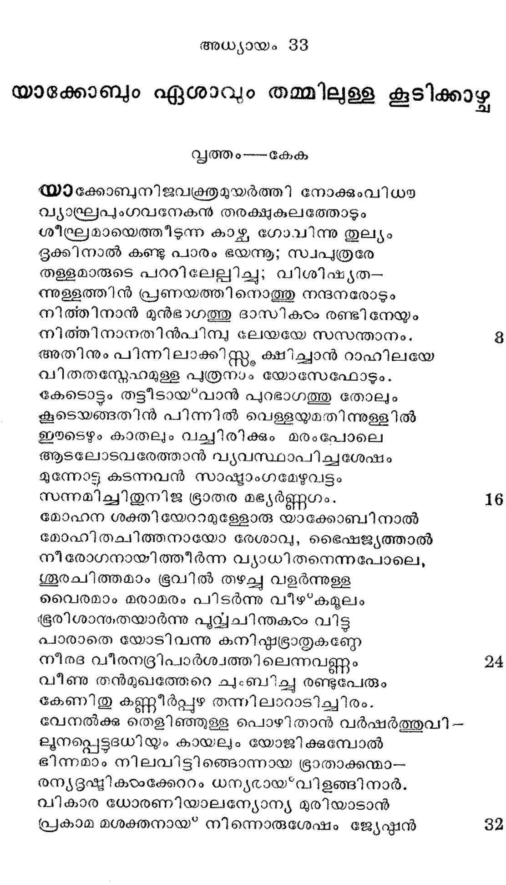
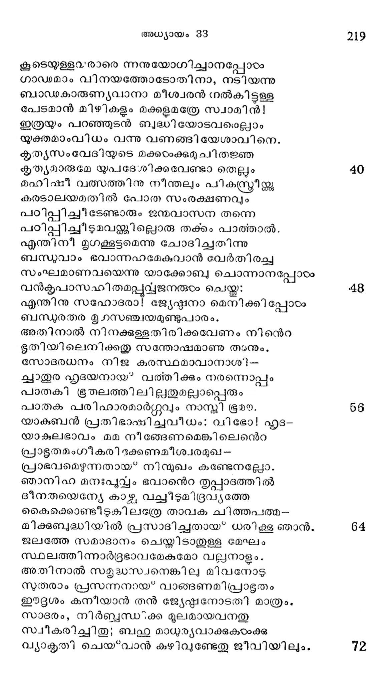
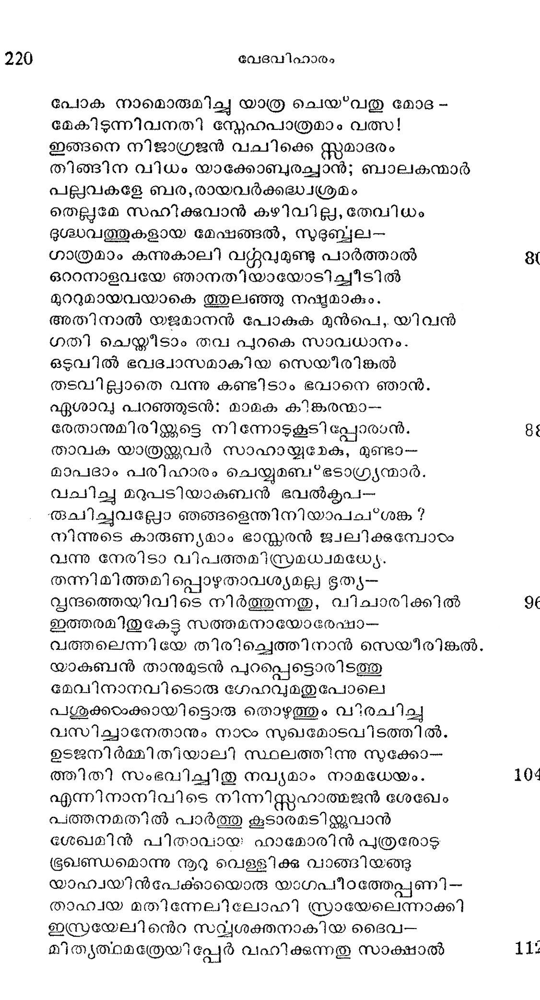

യാക്കോബും ഏശാവും തമ്മിലുള്ള കൂടിക്കാഴ്ച
വൃത്തം---കേക
യാക്കോബുനിജവക്രതമുയര്ത്തി നോക്കുംവിധയ
വ്യാഡ്രപുംഗവനേകന തരക്ഷുകുലത്തോടും
ശീഫ്രമായെത്തിടുന്ന കാഴ്ച ഗോവിന്നു തുല്യം
ഭൂുക്കിനാല് കണ്ടു പാരം ഭയന്നു; സ്വപുത്രരേ
തള്ളമാരുടെ പററിലേല്ിിച്ചു; വിശിഷ്ൃയത-
ന്നള്ളത്തിന് പ്രണയത്തിനൊത്തു നന്ദനരോടും
നിത്തിനാന് മുന്ഭാഗത്തു ദാസികടം രണ്ടിനേയും
നിത്തിനാനതിന്പിമ്പു ലേയയേ സസന്താനം. 8
അതിനും പിന്നി ലാക്കിസ്റ്, ക്ഷിച്ചാന് റാഹിലയേ
വിതതസ്നേഹമുള്ള പുത്രനാം യോസേഫോടും.
കേടൊട്ടം തട്ടീടായ*വാന് പുറഭാഗത്തു തോലും
കൂടെയങ്ങതിന് പിന്നില് വെള്ളയ്മതിന്നുള്ളില്
ഈടെഴും കാതലും വച്ചിരിക്കും മരംപോലെ
ആടലോടവരേത്താന് വൃവസ്ഥാപിച്ചശേഷം
മുന്നോട്ടു കടന്നവന് സാഷ്യാംഗമേഴുവട്ടം
സന്നമിച്ചിതുനിജ ഭ്രാതര മഭ്യര്ണ്ണഗം. 16
മോഹന ശക്തിയേറാമുള്ളോരു യാക്കോബിനാല്
മോഹിതചിത്തനായോ രേശാവ്, ഭൈഷജ്യത്താല്
നീരോഗനായിത്തീര്ന്ന വ്യാധിതനെന്നപോലെ,
ശൂരചിത്തമാം ഭൂവില് തഴച്ചു വളര്ന്നുള്ള
വൈരമാം മരാമരം പിടര്ന്നു വീഴ*കമുലം
ഭൂരിശാ൯്തയാര്ന്നു പൂവ്വയചിന്തകടം വിട്ട
പാരാതെ യോടിവന്നു കനിഷ്ടട്രാതൃുകണ്ണേ
നീരദ വീരന്ദ്രിപാര്ശ്വത്തിലെന്നവണ്ണം 24
വീണു തന്മുഖത്തേറെ ചുംബിച്ചു രണ്ടുപേരും
കേണിതു കണ്ണീര്പ്പുഴ തന്നിലാറാടിച്ചിരം.
വേനല്ക്കു തെളിഞ്ഞുളള പൊഴിതാന് വര്ഷര്ത്തുവി--
ലുനപ്പെട്ടടധിയും കായലും യോജിക്കുമ്പോല്
ഭിന്നമാം നിലവിട്ടിങ്ടൊന്നായ ഭ്രാതാക്കന്മാ--
രന്യദൂഷ്മികഠംക്കേററം ധന്യരായ*വിളങ്ങി നാർ.
വികാര ധോരണിയാലന്യോന്യ മുരിയാടാന്
പ്രകാമ മശക്തനായ്* നിന്നൊരുശേഷം ജ്യേഷ്ഷന് 32

കൂടെയുള്ള൨രാരെ ന്നനുയോഗിച്ചാനപ്പോഠം
ഗാഡമാം വിനയത്തോടോതിനാ, നടിയന്നു
ബാഡകാരുണ്യവാനാ മീശ്വരന് നല്കിട്ടള്ള
പേടമാന് മിഴികളും മക്കളമത്രേ സ്വാമിന്!
ഇത്രയും പറഞ്ഞുടന് ബുദ്ധിയോടവമെല്ലാം
യുക്തമാംവിധം വന്നു വണങ്ങിയേശാവിനെ.
കൃത്യസംവേദിയുടെ മക്കഠംക്കുമുചിതജ്ഞ
കൃത്യമാരുമേ യുപദേശിക്കവേണ്ടാ തെല്ലം
മഹിഷീ വത്സത്തിനു നീന്തലും പികസ്റ്രീയ്ക്കു
കരടാലയമതിൽല് പോത സംരക്ഷണവും
പഠിപ്പിച്ച? ടേണ്ടാരും ജന്മവാസന തന്നെ
പഠിപ്പിചിീടുമവയ്ക്കില്പൊരു തക്കം പാത്മാൽ.
എന്തിനീ മൃഗക്കൂട്ടമെന്നു ചോദിച്ചതിന്നു
ബന്ധുവാം ഭവാന്നഹമേകുവാന് വേര്തിരച്ച
സംഘമാണവയെന്നു യാക്കോബു ചൊന്നാനപ്പോടം
വന്കൃപാസഹിതമപ്പുവ്ജനരുഠം ചെയ്ത:
എന്തിനു സഹോദരാ! ജേയേഷ്ഠനാ മെനിക്കി പ്പോഠം
ബന്ധുരതര മൃഗസഞ്ചയമുണ്ടുപാരം.
അതിനാല് നിനക്കുള്ളതിരിക്കവേണം നിന്െറ
ഭൂതിയിലെനിക്കതു സന്തോഷമാണു താനും.
സോദരധനം നിജ കരസ്ഥമാവാനാശി-
ക്വാതുര ഹൃദയനായ? വത്തിക്കും നരന്നൊപ്പം
പാതകീി ഭൂതലത്തിലില്ലതുമല്ലാപ്പെരും
പാതക പരിഛാരമാര്ഗ്ഗവും നാസ്തി ഭൂമന.
യാകബന് പ്രതിഭാഷിച്ചവീധം: വിഭോ! ഹൃദ-
യാകുലഭാവം മമ നീങ്ങേണമെങ്കിലെന്െറ
പ്രാഭുതമംഗീകരി ദക്കണമീശ്വരമുഖ--
പ്രാഭവമെഴുന്നതായ് നി ന്ുഖം കണ്ടേനല്ലോ.
ഞാനിഹ മനഃപുവ്വം ഭവാന്െറ തൃപ്പാദത്തില്
ദീനതയെന്യേ കാഴ വച്ചീടുമിദ്രവ്ൃത്തേ
കൈക്കൊണ്ടീടുകിലത്രേ താവക ചിത്തപത്മ-.
മിക്കുബദ്ധിയില് പ്രസാദിച്ചതായ* ധരിക്കൂ ഞാന്.
ജലത്തേ സമാദാനം ചെയ്തിടാതുള്ള മേഘം
സ്ഥലത്തിന്നാര്ദ്രഭാവമേകുമോ വലുനാളം.
അതിനാല് സളൃദ്ധസ്വനെങ്കിലു മിവനോടു
സുതരാം പ്രസന്നനായ വാങ്ങണമിപ്പാഭൂതം
ഈദൃശം കനീയാന് തന് ജ്യേഷ്ഠനോടതി മാത്രം.
സാദരം, നിര്ബ്ബന്ധ” ക്ക മൂലമായവനതു
സ്വീകരിച്ചിതു; ബഹു മാധുര്യവാക്കുകയംക്കു
വ്യാകൃതി ചെയ്വാന് കഴിവുണ്ടേതു ജീവിയിലും.

പോക നാമൊരുമിച്ചു യാത്ര ചെയ*വതു മോദ -
മേകിടുന്നിവനതി സ്നേഹഫപാത്രമാം വത്സ!
ഇങ്ങനെ നിജാഗ്രജന് വചിക്കെ സ്റ്റമാദരം
തിങ്ങിന വിധം യാക്കോബുരച്ചാന്; ബാലകന്മാർ
പല്പവകളേ ബര,രായവര്ക്കദ്ധ്വശ്രമം
തെല്ലമേ സഹിക്കുവാന് കഴിവില്ല,തേവിധം
ദുശ്ധവത്തുകളായ മേഷങ്ങല് , സുദുബ്ബല-
ഗാത്രമാം കന്നുകാലി വറ്റുവുമുണ്ടു പാര്ത്താല് 8
ഒററനാളവയേ ഞാനതിയായോടിച്ചീടില്
മുററുമായവയാകെ ത്തുലഞ്ഞു നഷ്ടമാകും.
അതിനാല് യജമാനന് പോകുക മുന്പെ, യിവന്
ഗതി ചെയ്തീടാം തവ പുറകെ സാവധാനം.
ഒടുവില് ഭവദ്വാസമാകിയ സെയീരിങ്കൽ
തടവില്ലാതെ വന്നു കണ്ടിടാം ഭവാനെ ഞാന്.
ഏശാവു പറഞ്ഞുടന്: മാമക കിങ്കരന്മാ--
രേതാനുമിരിയ്ക്കുടെ നിന്നോടുകൂടി പ്പോരാന്. 8;
താവക യാത്ര്്തകുവര് സാഹായ്യമേക, മുണ്ടാ-
മാപദാം പരിഹാരം ചെയ്യുമബ*ഭടാഗ്രൃന്മാര്.
വചിച്ചു മറുപടിയാകുബന് ഭവല്കൃപ-
രുചിച്ചുവല്ലോ ഞങ്ങളെന്തിനിയാപച*ശങ്ക ?
നിന്നുടെ കാരുണ്യമാം ഭാസ്ക്കരന് ജ്വലിക്കുമ്പോടം
വന്നു നേരിടാ വിപത്തമിസ്രമധ്വമധയേൃ.
തന്നിമിത്തമിപ്പൊഴുതാവശ്യമല്ല ഭൂത്യ-
വ്ൃന്ദത്തെയിവിടെ നിര്ത്തുന്നതു, വിചാരിക്കില് 9(
ഇത്തരമിതുകേട്ട സത്തമനായോരേഷാ-
വത്തലെന്നിയേ തിരിച്ചെത്തിനാന് സെയീിരിങ്കല്.
യാകുബന് താനുമുടന് പുറപ്പെട്ടൊരിടത്തു
മേവിനാനവിടൊരു ഗേഹവുമതുപോലെ
പശുക്കരംക്കായിട്ടൊരു തൊഴുത്തും വിരചിച്ചു
വസിച്ചാനേതാനും നാടം സുഖമോടവിടത്തില്.
ഉടജനിര്മ്മിതിയാലി സ്ഥലത്തിന്നു സുക്കോ-
തഛിതി സംഭവിച്ചിതു നവ്യമാം നാമധേയം. 10%
എന്നിനാനിവിടെ നിന്നിസ്റ്റഹാത്മജന് ശേഖേം
പത്തനമതില് പാര്ത്തു കൂടാരമടിജ്കകവാന്
ശേഖമിന് പിതാവായ ഹാമോരിന് പുത്രരോട
ഭ്രഖണ്ഡമൊന്നു നൂറു വെള്ളിക്ക് വാങ്ങിയങ്ങു
യാഹ്വയിന്പേക്കായൊരു യാഗപീഠത്തേപ്പണി--
താഹ്വയ മതിന്നേലിലോഹി സ്രായേലെന്നാക്കി
ഇസ്രയേലി ന്െറ സവ്യശക്തനാകിയ ടദൈവ--
മിതൃത്ഥമത്രേയിപ്പേര വഹിക്കുന്നതു സാക്ഷാല് 11
